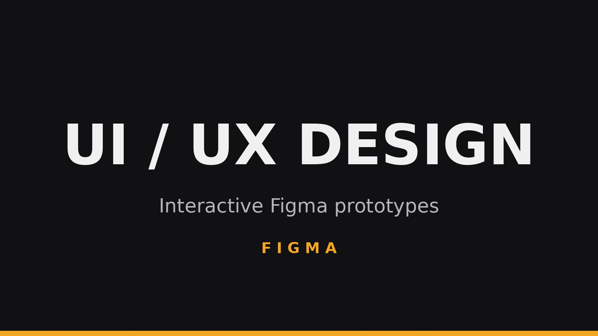

Everything below is embedded live from Figma. The clickable ones are prototypes you can step through like a real app, and the full design files let you drag to pan and scroll to zoom. Either way, the toolbar in the corner of each embed opens it full screen.
SAXION CMGT WEBSITE REDESIGN
A redesign of my school's website, reworking the layout and hierarchy to make it clearer and more inviting, built on the Saxion and CMGT colour palettes so it still sits inside the existing brand.
GAMIFIED LINKEDIN
A concept that reimagines LinkedIn with game-style motivation, adding challenge and progression layers on top of the familiar professional network to make building your profile and skills feel more rewarding.
FPS GAME UI
An interface design for a first-person shooter, covering the in-game HUD and menu screens with a focus on readability at speed, where the player has to take in information in a glance.
SNAIL GAME UI/UX REDESIGN
A UI and UX redesign for a snail game I have been building in Unity, reworking the interface so it fits the game and stays clear in play. This one is a clickable prototype, so you can step through the screens as they would appear in the game.
LEAGUE OF LEGENDS MOBILE: A/B TEST
An advanced UI exercise for a League of Legends mobile interface, designed in two versions so they could be compared head to head in an A/B test. Building two directions for the same screens is a good way to pressure-test layout and hierarchy decisions rather than committing to the first idea.